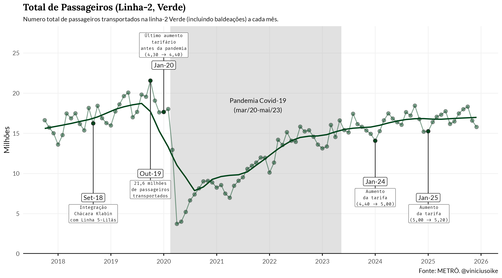
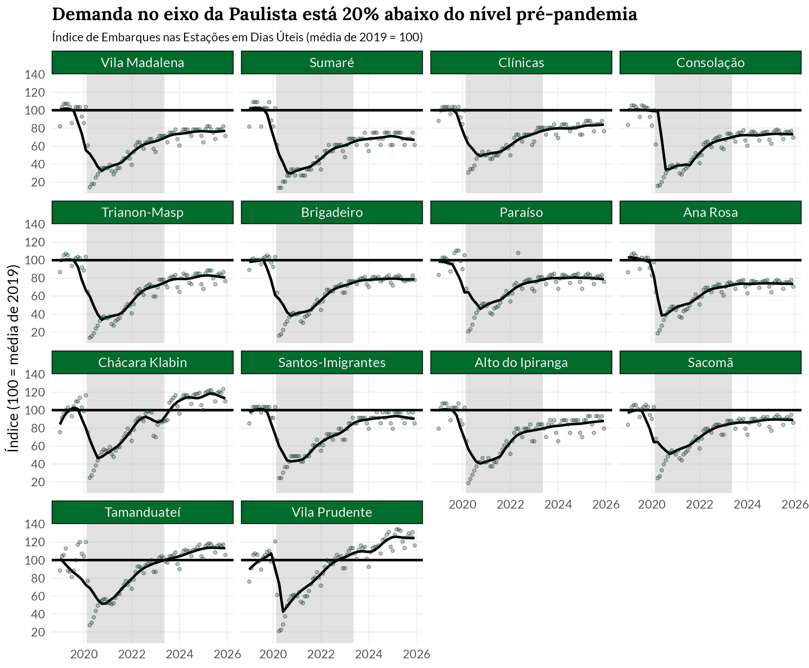
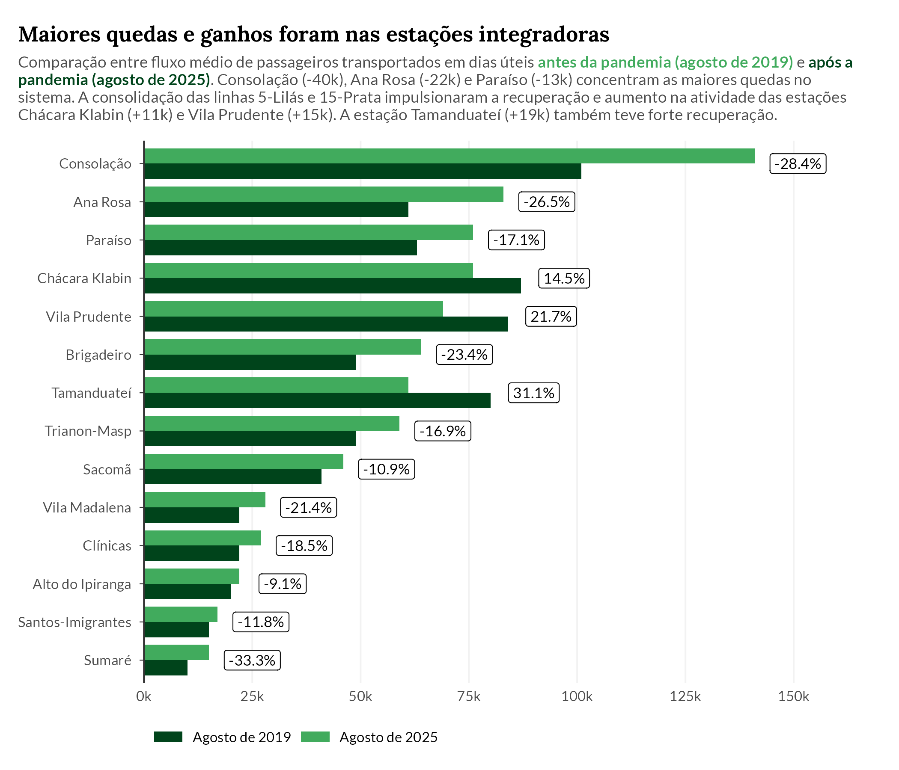
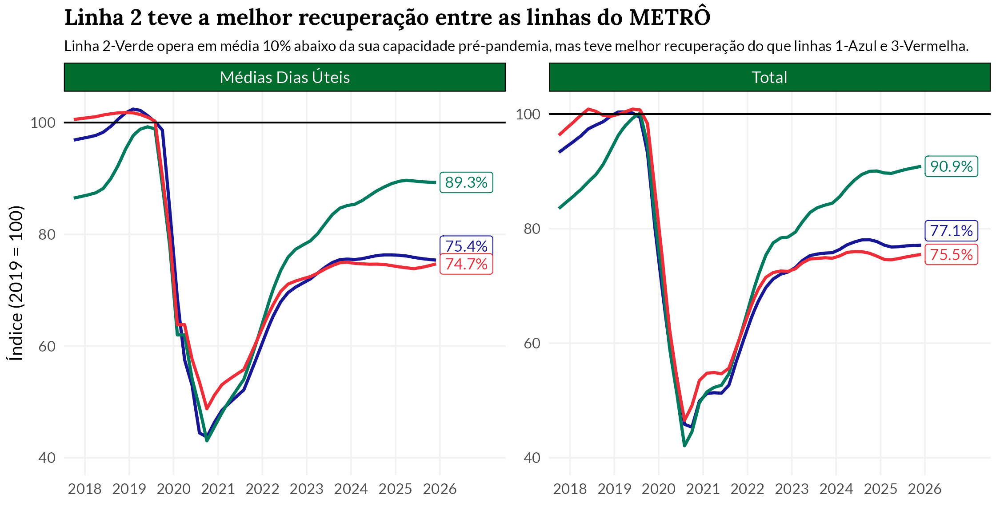

Linha 2-Verde do Metrô
A Linha 2-Verde teve a melhor recuperação pós-pandemia entre as linhas do METRÔ, mas segue operando cerca de 10% abaixo do patamar de 2019.
A demanda no eixo da Paulista (Consolação, Trianon-Masp, Brigadeiro) permanece cerca de 20% abaixo do nível pré-pandêmico, refletindo o impacto do trabalho híbrido e remoto na região.
O recorde de passageiros transportados no mês foi registrado em outubro de 2019, com 21,6 milhões de passageiros.
A integração com a Linha 5-Lilás na estação Chácara Klabin (set/2018) ampliou a conectividade da linha, consolidando um novo ponto de baldeação.
Análise
Overview
O gráfico abaixo mostra a evolução mensal do total de passageiros transportados na Linha 2-Verde. A linha sólida indica a tendência estimada da série, desconsiderando efeitos sazonais e outliers.

A série revela um crescimento moderado até meados de 2018, impulsionado pela integração com a Linha 5-Lilás na estação Chácara Klabin em setembro de 2018. O pico de passageiros foi atingido em outubro de 2019, com 21,6 milhões de passageiros transportados.
A pandemia reduziu drasticamente a demanda a partir de março de 2020. A recuperação pós-pandemia se estabilizou num patamar inferior ao pré-pandêmico.
Recuperação por estação
O gráfico abaixo normaliza as séries pela média mensal de embarques em dias úteis de 2019, mostrando a evolução do índice por estação.

A recuperação é desigual entre as estações. As estações no eixo da Paulista — Consolação, Trianon-Masp e Brigadeiro — operam cerca de 20% abaixo do nível pré-pandêmico. Estas estações concentram forte demanda de trabalhadores de escritório, segmento mais impactado pela adoção do trabalho remoto.
Em contraste, estações como Vila Prudente, Tamanduateí e Santos-Imigrantes, que atendem predominantemente fluxos residenciais e de baldeação, apresentam recuperação mais robusta. Chácara Klabin, ponto de integração com a Linha 5-Lilás, também mostra recuperação acima da média.
De fato, as estações de integração tradicionais (Consolação, Paraíso e Ana Rosa) sofreram quedas significativas. O gráfico compara o fluxo médio de passageiros (incluindo baldeações) em dias úteis em agosto de 2019 e agosto de 2025. Já as estações Chácara Klabin e Vila Prudente expandiram seus níveis de atividade, com a consolidação das linhas 5-Lilás e 15-Prata, respecitvamente.

Comparação entre linhas
A Linha 2-Verde apresenta a melhor recuperação entre as três linhas operadas pelo METRÔ. O gráfico abaixo compara a evolução do índice de passageiros (base 2019 = 100) para as Linhas 1-Azul, 2-Verde e 3-Vermelha.

A Linha 2-Verde opera em média 10% abaixo da sua capacidade pré-pandemia, enquanto as Linhas 1-Azul e 3-Vermelha apresentam defasagens maiores. A diferença pode refletir o perfil das estações atendidas: a Linha 2-Verde possui forte componente residencial e de integração, enquanto as linhas 1 e 3 concentram maior proporção de estações em áreas comerciais centrais.
Mapa da Linha
O mapa abaixo mostra o trajeto da Linha 2-Verde, incluindo as futuras estações, com o fluxo diário médio nos dias úteis e nos finais de semana.
Dados: {metrosp}
Tipografia: Fira Code e Lato
Paleta:
"#006D2C"